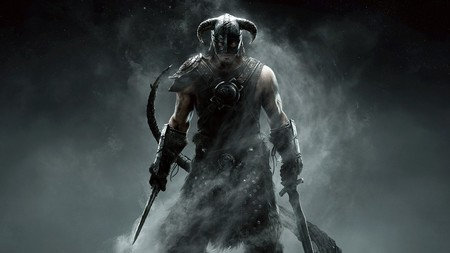

Historia Principal
The Elder Scrolls V : Skyrim es un videojuego de rol de acción del tipo mundo abierto desarrollado por Bethesda Game Studios y publicado por Bethesda Softworks. Es la quinta entrega de videojuegos de acción y fantasía de la serie The Elder Scrolls y es posterior a The Elder Scrolls IV: Oblivion y predecesor de The Elder Scrolls Online. Skyrim salió a la venta el 11 de noviembre de 20111 para las plataformas: Microsoft Windows, Xbox 360 y PlayStation 3. El 26 de julio de 2012 fueron lanzados al mercado tres expansiones que son descargables: Dawnguard, Hearthfire y Dragonborn. El 28 de octubre de 2016 fue lanzada una remasterización llamada: Skyrim Special Edition HD. Incluye el juego original y los complementos, así como nuevas características: gráficos y efectos renovados.
La historia de Skyrim se centra en los esfuerzos del personaje, dovahkiin, para derrotar a Alduin, un dragón/dovah que, según la profecía, destruirá el mundo. La trama está fechada doscientos años después de los sucesos de Oblivion y tiene lugar en la provincia ficticia de Skyrim. En el transcurso de la partida, el jugador completa misiones y hace evolucionar a su personaje gracias a la mejora de sus habilidades. A diferencia de los juegos anteriores de Elder Scrolls, en Skyrim no se requiere que el usuario seleccione un tipo de personaje al inicio del juego, resolviendo así el problema que el equipo de desarrolladores veía desde versiones anteriores: la necesidad de tener que forzar al usuario a un estilo rígido de juego. Skyrim continúa con la tradición de mundo abierto al permitir que el jugador viaje a cualquier parte del mapa del juego en cualquier momento y posponer indefinidamente u omitir parcial o totalmente la historia principal.
El despertar de los dragones
La historia inicia en plena guerra civil entre los que apoyan la independencia del imperio y otra entre los que apoyan al imperio ya que es este el que mantiene al Dominio de Aldmer alejado de Skyrim. Cuando el personaje del jugador está preso y siendo conducido a la ciudad forticada de Helgen a una ejecución «Imperial». Allí se encuentran a varios militantes de «Los capa de la tormenta» y su líder: Ulfric Capa de la Tormenta. Al llegar a Helgen, pese a no haber sido identificado y a no constar en la lista de candidatos a ejecución, los imperiales deciden ejecutar al jugador. Inesperadamente, un dragón irrumpe deteniendo las ejecuciones, ataca y destruye el poblado. El jugador decide si escapa con la ayuda de un militante imperial, Hadvar, o con uno de los presos que le acompañaban, Ralof, perteneciente a "Los capa de la tormenta". Hecha la decisión, viajan a la aldea de Cauce Boscoso, una caserío cercano a Helgen, cuyos habitantes desconocen que el dragón podría atacar su pueblo. Se le pide que vaya a la ciudad amurallada de Carrera Blanca a solicitar la ayuda del Jarl —título nobiliario del juego que equivale a Señor Feudal— de esa subregión;La Grieta , para hacerle frente a la amenaza del dragón. El jarl Balgruuf el Grande acepta y le pide al jugador que hable con «Farengar Fuego Secreto» el mago de la corte, este le pide que encuentre y le lleve la «Piedra del dragón» del Túmulo de las cataratas lúgubres, una tablilla mágica que muestra la localización de los túmulos de los dragones, lugares donde se hallan sepultados antiguos dragones caídos en combate